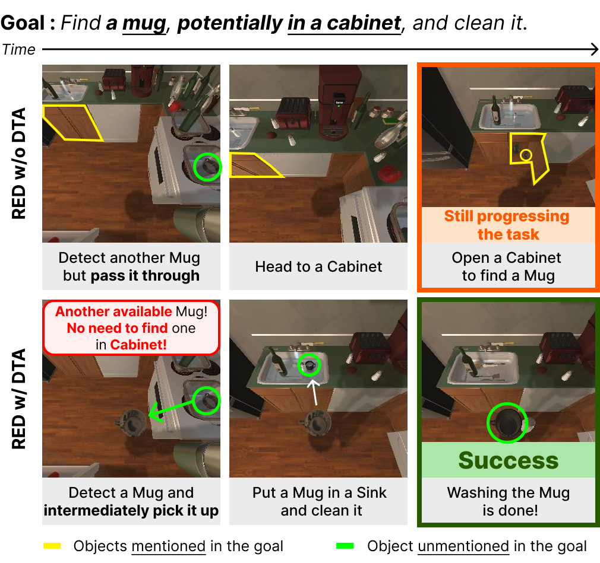
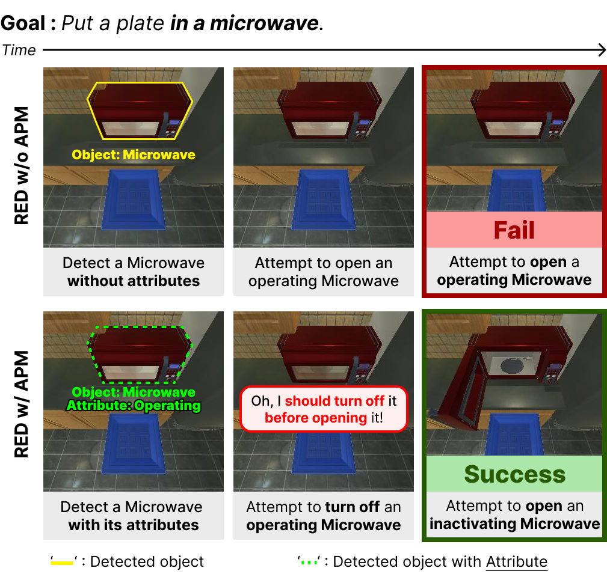
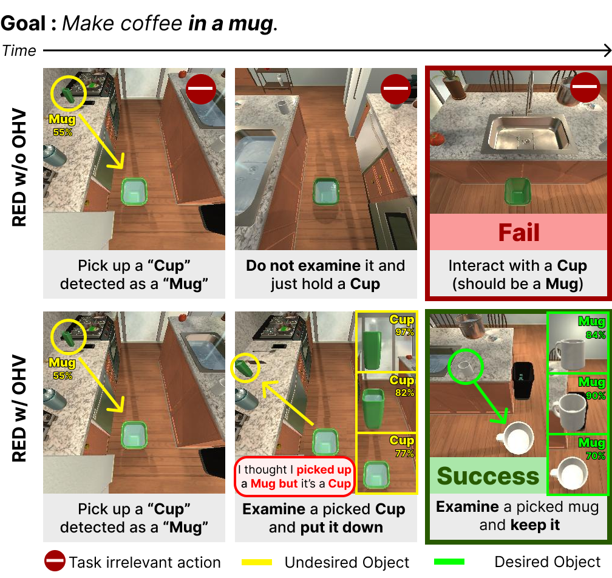
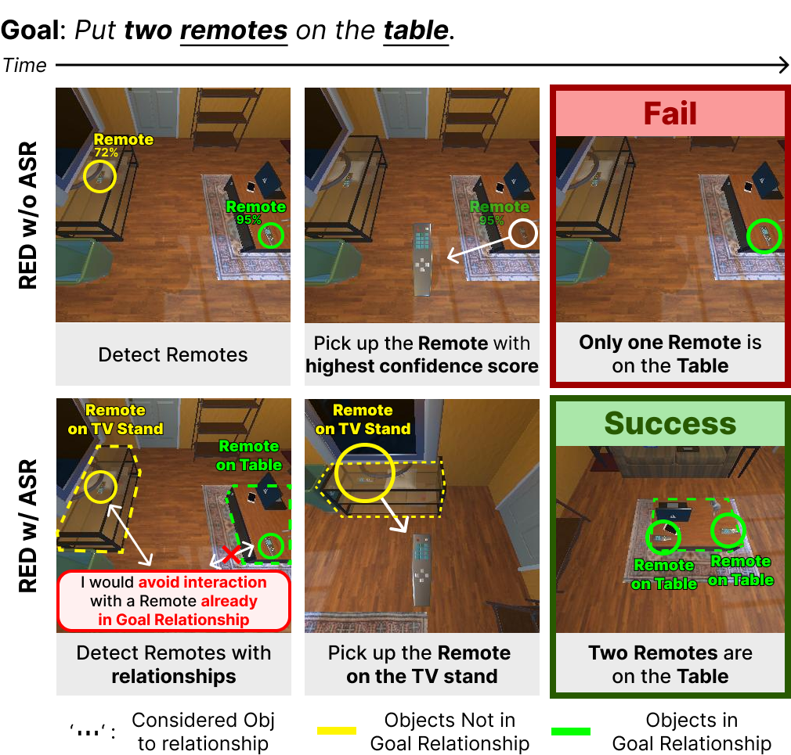

Revising Actions using Environmental Feedback
The state-of-the-art embodied agents revise their original plans after taking actions and encountering failures. But failure may result in irreversible consequences e.g., spilling milk on the floor. To address the issue, the agent revises its original action plan before failure based on environmental feedback when unexpected scenarios such as "environmental discrepancies" occur. The system uses a function that generates a revised plan by querying a large language model (LLM) with a feedback prompt describing the discrepancy. Four modules—Dynamic Target Adaptation, Object Heterogeneity Verification, Attribute-Driven Plan Modification, and Action Skipping by Relationship—are proposed to handle different types of discrepancies, improving the agent's ability to adjust its actions effectively.
Environmental Feedback
Dynamic Target Adaptation (DTA)
The agent considers 'presence discrepancy'—whether the target object is in the expected location—and adapts its action plan by revising navigation targets to improve efficiency when objects are found in unexpected locations. 
Attribute-Driven Plan Modification (APM)
The agent considers 'attribute discrepancy'—whether the target object's state, such as dirty or clean, is as expected. If not, the agent adjusts its action plan by adding or removing steps to align with the current state of the object. 
Object Heterogeneity Verification (OHV)
The agent considers 'appearance discrepancy'—whether it interacted correctly with the desired object—and improves the success rate by verifying if the interacted object is correct, comparing its appearance from different viewpoints. 
Action Skipping by Relationship (ASR)
The agent considers 'object-object relationship discrepancy'—whether the target object is placed on another object and whether that location is already the target position—and reduces unnecessary actions by adjusting its plan to pass the target object if it is already in the correct location without further interaction. Revising Actions
When an agent faces unexpected scenarios caused by 'differences' between inferred and observed states, referred to as 'environmental discrepancies,' PRED revises a original plan, $\{a_n\}_{n=1}^N$, by querying a large language model, \(\mathcal{L}\), with a prompt, \(\mathcal{P}\). \(\mathcal{P}\) concatenates a system prompt, \(\mathcal{P}_{s}\), for a general description and guide of the task, the original plan, and a feedback prompt, \(\mathcal{P}_f\), which describes the discrepancy encountered as environmental feedback generated by the LLM. Then \(\mathcal{L}\) receives \(\mathcal{P}\) and produces a revised plan, $\{a'_k\}_{k=1}^K$ as: \begin{equation} \label{eq:revising_actions} \{a'_k\}_{k=1}^K = \mathcal{L}(\mathcal{P}) \quad \text{where} \quad \mathcal{P}=[\mathcal{P}_{s}; \{a_n\}_{n=1}^N; \mathcal{P}_f]. \end{equation}
Additional details of revising actions are provided in the Appendix C.1. To build a feedback prompt, we consider four types of environmental discrepancies caused by the presence, appearance, attributes, and relationships of objects based on visual information that occupies a large proportion of sensory information perceived by humans.
Results
We compare PRED with prior state-of-the-art methods on the TEACh and ALFRED benchmarks summarized in Table 1 and Table 2, respectively. Both benchmarks have three environment splits: 'train,' 'validation,' and 'test.' However, in TEACh, the 'test' split is replaced by 'validation.' The validation and test environments are further divided into two folds, seen and unseen, to assess the generalization capacity. The primary metric is the success rate, denoted by ‘SR,’ which measures the percentage of completed tasks. Another metric is the goal-condition success rate, denoted by ‘GC,’ which measures the percentage of satisfied goal conditions. Finally, path-length-weighted (PLW) scores penalize SR and GC by the length of the actions that the agent takes.
In the TEACh benchmark, in TfD and EDH setups, we observe that PRED outperforms the previous methods in unseen/seen environments for SR and GC, which implies the effectiveness of our proposed PRED. Table 2 shows the prior arts and PRED’s performance in the ALFRED benchmark with a few different settings. We include the ‘Reproduced’ section because the reproduced results of previous methods differ slightly from the originally reported ones. As shown in Table 2, we observe that our method outperforms the prior arts in all metrics, implying the effectiveness of the proposed components.
For more details, please check out the paper.
Comparison with State of the Art

Dynamic Target Adaptation (DTA)

Object Heterogeneity Verification (OHV)

Action Skipping by Relationship (ASR)
BibTeX
@inproceedings{kim2023context,
author = {Kim, Jinyeon and Min, Cheolhong and Kim, Byeonghwi and Choi, Jonghyun},
title = {Pre-emptive Action Revision by Environmental Feedback for Embodied Instruction Following Agents},
booktitle = {CoRL},
year = {2024},
}